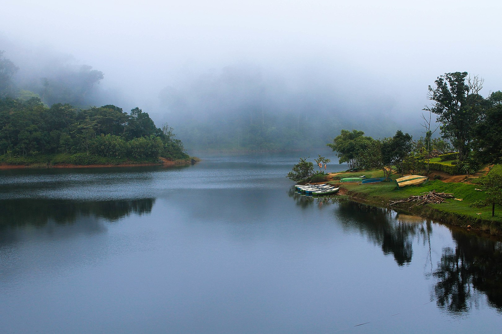

Aranmula

Konni

Gavi
Pathanamthitta
It is presumed that the regions that form the district were formerly under the rule of Pandalam, which had connections with the Pandya kingdom. When Pandalam was added to the princely state of Travancore in 1820, the region came under Travancore administration. Pathanamthitta being also a land of culture and learning could bring forth the literary talents of two centuries together in single volume named Desathuti: Pathanamthitta Kavithakal. Unnikrishnan Poozhikkad collected 184 poems of different poets of Pathanamthitta starting from 18th century. The district is known for its reserve forest and wild life. Perunthenaruvi water falls, Kakki reservoir surrounded by forest and wild animals, dam sites at Moozhyar and Maniyar, elephant training centre at Konni, Charalkunnu hill station are ideal locations for nature enthusiasts. With a number of fairs and festivals, Pathanamthitta district is known as the "Headquarters of Pilgrimage Tourism." The district receives an estimated 3 to 4 million pilgrims during the festival season of Sabarimala temple. The temple is dedicated to the Hindu deity, Ayyappan. The district is a host to Asia's biggest and the world's second largest Christian convention, the Maramon Convention.
Aranmula
Konni
Gavi